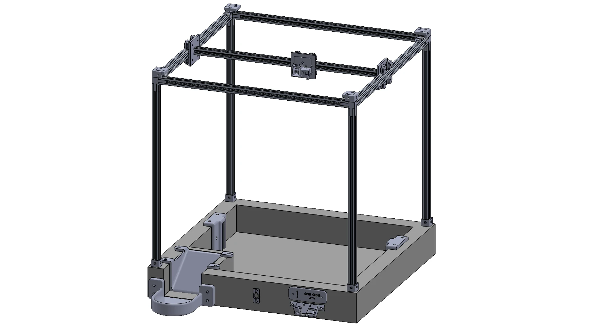

Two-Player Claw Machine
Designed the primary mechanical system for a two-player, hand-cranked claw machine developed for STEM outreach.

PROJECT OVERVIEW
A working machine with a manual gantry and pneumatic claw.
01 / MECHANISM DESIGN
Manual CoreXY-style motion
Proposed a CoreXY-style gantry with two hand cranks to move the claw across the playing area. A small motor handled vertical movement, and a pneumatic mechanism opened and closed the claw.
Created more than 30 individual mechanical parts in SolidWorks, including claw components, mounting brackets, and interfaces between the frame and motion system.


02 / PROTOTYPING
Iteration on the claw mechanism
Developed dimensioned 2D drawings and STEP files for team fabrication. Refined the pneumatic claw through more than five iterations, including grip geometry, actuation, fits, and clearance.
Assembly and physical operation exposed pulley alignment, cable routing, and interference problems that CAD alone did not reveal.

03 / TESTING AND DOCUMENTATION
From assembly to outreach demo
Helped troubleshoot the completed machine and wrote substantial portions of the project report, parts lists, and the 70+ page user manual.
The team's final report recorded more than 100 operating cycles and a 93% success rate in 30 pneumatic gripping trials. These were team-reported tests, not independent certification.
TAKEAWAY
Good CAD still has to work when assembled.
Original motion concept and most mechanical CAD developed independently within a five-person team.
Teammates contributed manufacturing, frame construction, electronics, and integration.
The working prototype and documentation demonstrated design-for-assembly and iterative troubleshooting.